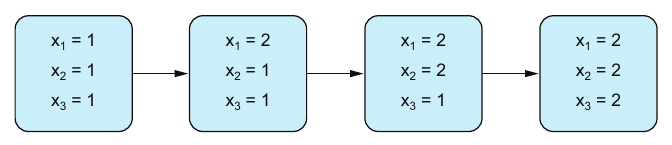
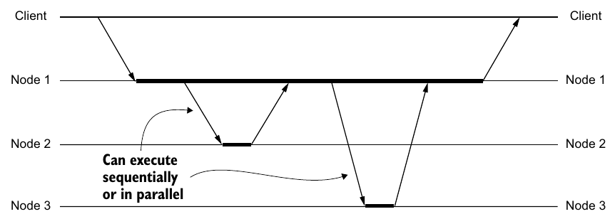
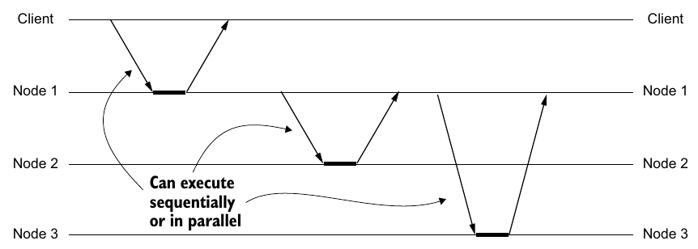
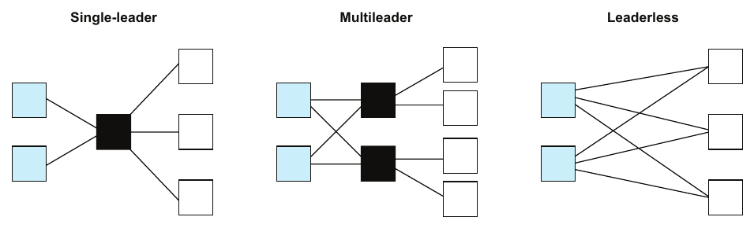

Chapter 8 · pp. 106–116
Replication
Think Distributed Systems, 1st Edition
Durability means a committed transaction can't go back on its word, and business processes depend on such promises. A merchant ships goods because the payment processor promised to collect payment (p. 106). In a model with perfect components, no promise is ever broken. In a practical model, a failed component may be unable to keep its promises, so we add redundancy to remove the single point of failure (pp. 106–107).
The chapter defines redundancy as duplication plus coordination, and distinguishes static from dynamic redundancy (p. 107). Its "Hello World" is a logic gate replicated three times behind majority gates (p. 108). A philosophical detour through William Kent's question "what is one thing?" (how many copies of SICP a library has) frames replication as a matter of identity and equivalence (pp. 109–110). The chapter then defines replication and replication transparency (p. 110), and covers the mechanics for a replicated key–value store:
- a point-to-point network model where message loss is a network partition (pp. 111–112);
- inherent and imposed replication lag (pp. 112–113);
- synchronous, asynchronous and quorum replication (pp. 113–114);
- state-based vs. log-based replication (p. 114);
- single-leader, multileader and leaderless systems, with conflict resolution and a warning about reading from followers (pp. 114–115).
The chapter’s own outline (from the book’s table of contents)
- 8.1 Redundancy — p. 107
- 8.2 Thinking about replication and consistency — p. 109
- 8.3 Replication — p. 110
- 8.4 The mechanics of replication — p. 111
- 8.4.1 System model — p. 111
- 8.4.2 Replication lag — p. 112
- 8.4.3 Synchronous vs. asynchronous replication — p. 113
- 8.4.4 State-based vs. log-based replication — p. 114
- 8.4.5 Single-leader, multileader, and leaderless systems — p. 114
From the book
Introduction
Durability (Chapter 5) is a promise, and promises are what processes build on. If a payment processor backtracks after an acknowledgment, the merchant has shipped goods without payment (p. 106). In a theoretical model without failures, backtracking can't happen. With Crash-Stop or Crash-Recovery failures it can, unless we add redundancy (pp. 106–107).
From the book
8.1 Redundancy
Redundancy is the duplication and coordination of subsystems, so that a higher duplication factor increases reliability and/or scalability (p. 107).
| Type | Components and interactions | Typical in (p. 107) |
|---|---|---|
| Static redundancy | Unchanged for the system's lifetime | Hardware |
| Dynamic redundancy | Change during the system's lifetime | Software |
Two aha! moments (pp. 107–108):
- Redundancy and scalability. Replication distributes data; load partitioning, such as round-robin load balancing across replicas, distributes load. Redundancy can also decrease scalability, as later chapters show, so the author attributes scalability to partitioning.
- Duplication and coordination. Mental models usually include the copies but rarely the coordination that composes them into a coherent system.
The redundant logic gate (Figure 8.1) (p. 108):
- A gate computes y = f(x₁, …, xₙ). If it fails, the system fails: it's a single point of failure.
- Replicate it three times (a, b, c) and coordinate with a majority gate: R = (a ∧ b) ∨ (b ∧ c) ∨ (a ∧ c), which is true if at least two inputs are true.
- Replicate the majority gate as well, so it doesn't become the new single point of failure.
- The group behaves like the original gate but tolerates one failed component.
Replication, having multiple instances of the same thing, is the most common implementation of duplication (p. 108).
Try it
Majority-voted redundancy
Open full screen ↗ · the simulation is the vault’s own model of the mechanism the book describes.
From the book
8.2 Thinking about replication and consistency
William Kent's Data and Reality asks what is "one thing"? (p. 109). The author's version (Table 8.1, Figure 8.2) (pp. 109–110):
- A library holds ten copies of Structure and Interpretation of Computer Programs: 3 first edition (1984), 5 second edition (1996) and 2 JavaScript edition (2022). The first two use Scheme.
| You consider equivalent… | Copies in stock |
|---|---|
| Any edition | 10 |
| Only the Scheme editions | 8 |
| Only the JavaScript edition | 2 |
Replication and consistency are about whether physical items represent the logical item. That means identity and equivalence, oneness and sameness, and the ambiguity is intrinsic to distributed systems (p. 110).
From the book
8.3 Replication
Replication represents one logical object by multiple identical physical objects, called replicas, to get past the reliability limits of a single object (Figure 8.3) (p. 110). Replication transparency is the system's ability to hide that there are many objects and give the illusion of one. Discussing it means balancing what to conceal and what to reveal, and trading consistency, availability and latency (p. 110).
From the book
8.4 The mechanics of replication
Stateless components can be replicated too, such as redundant logic gates or load-balanced stateless services. It's so straightforward that we rarely call it replication. The chapter focuses on stateful components, which hold most of the complexity (p. 111). It uses a replicated key–value store (Figure 8.4), ignores partitioning, and assumes the whole dataset fits on one node (p. 111).
Complexity comes from change: a static object is easy to replicate (p. 111). The aha! moment is that not all change is equal. Suppose you only care whether a counter exceeds 10 (p. 111):
| Counter supports | Does a new change invalidate "it's above 10"? |
|---|---|
| Increment and reset | Yes: a reset takes it back to 0 |
| Increment only | No: once above 10, it stays above 10. This is monotonicity |
8.4 The mechanics of replication
8.4.1 System model
pp. 111–112The same partially synchronous model with Crash-Stop, Omission and Crash-Recovery failures. Two differences from earlier chapters:
- The network is modelled as point-to-point links between components instead of a central hub, which makes network partitions easy to picture.
- Message loss is attributed to a partition: a temporary, intermittent or permanent failure of one or more links. Figure 8.5 has one client, three replicas, and a partition between replica 1 and replica 2.
8.4 The mechanics of replication
8.4.2 Replication lag
pp. 112–113Only one component or the network takes a step at a time, so an update reaches replicas one after another. Figure 8.6 shows x₁, x₂ and x₃ becoming 2 in turn. Lag is an inherent aspect of replicated systems, not just a delay, and it is the source of many problems, including lost replication transparency (p. 112).


| Lag | Cause (p. 113) |
|---|---|
| Inherent | The nature of distributed systems: unavoidable |
| Imposed | Network partitions and component failures: additional |
8.4 The mechanics of replication
8.4.3 Synchronous vs. asynchronous replication
pp. 113–114| Mode | An operation is complete when… | Replication runs | Effect |
|---|---|---|---|
| Synchronous (Figure 8.7) | Every other node has acknowledged | In the foreground | Immediate consistency; latency and availability depend on every node |
| Asynchronous (Figure 8.8) | The initial node has processed it | In the background | Better latency and availability, at a cost in consistency |
| Quorum (hybrid) | A majority has acknowledged | Foreground within the quorum, background outside it | Common in practice |
Either way, replicas can be updated sequentially or in parallel (Figures 8.7–8.8).




8.4 The mechanics of replication
8.4.4 State-based vs. log-based replication
p. 114Assume a deterministic state machine, step : State → Operation → State: replicas that start in the same state and apply the same operations in the same order reach the same state. Then there are two options. For a counter starting at 0 with increment-by(2) then increment-by(3):
| Replicate… | Messages on the wire |
|---|---|
| State (or a diff of it) | counter = 2, counter = 5 |
| Log (the operations) | increment-by(2), increment-by(3) |
Log-based replication is "emerging as the industry favorite" (p. 114).
Try it
Replicating a counter
Open full screen ↗ · the simulation is the vault’s own model of the mechanism the book describes.
8.4 The mechanics of replication
8.4.5 Single-leader, multileader, and leaderless systems
pp. 114–115Leaders are authorized to accept and handle requests; followers may not process requests directly (Figure 8.9):


| Configuration | Who accepts operations | Strength | Weakness |
|---|---|---|---|
| Single-leader | One leader, which propagates changes to followers | A chain of command | The leader is a single point of failure, almost negating the point of replication |
| Multileader | Any of several leaders | No single point of failure | Concurrent operations conflict, so conflict resolution is needed |
| Leaderless | Any node | No leader at all | Conflict resolution is needed |
Conflict resolution ranges from timestamp-based last write wins to CRDTs, and neither is simple in practice. Last write wins can unexpectedly overwrite a write from the client's point of view (p. 115).
Aha! moment: are leaders for writes and followers for reads? That's a common configuration, but it neglects replication lag. Followers may not have the latest data, so for the most up-to-date reads, go to the leader (p. 115).
Recap
Trade-offs at a glance
| Choice | Buys | Costs |
|---|---|---|
| Synchronous replication | Immediate consistency | Latency, and availability limited by the slowest or failed replica |
| Asynchronous replication | Latency, availability | Lag: stale reads, and lost writes if the leader fails |
| Quorum replication | Tolerates a minority of slow or failed replicas | A majority round trip per write |
| State-based | Simple; tolerates lost or duplicated messages if the full state is sent | Large messages; overwrites concurrent changes |
| Log-based | Small messages; the full history | Needs every operation once, in order (Chapter 4) |
| Single-leader | No write conflicts | Single point of failure (Chapter 10 replaces leaders safely) |
| Multileader or leaderless | Write availability | Conflict resolution: LWW loses writes; CRDTs constrain the data model |
| Reads from followers | Read scalability | Stale data |
Recap
Key takeaways
- Redundancy = duplication + coordination. A pile of copies isn't a system; something, from round-robin load balancing to consensus, must coordinate them (pp. 107–108).
- Static redundancy keeps the same components and interactions for the system's lifetime, mostly in hardware. Dynamic redundancy changes them, mostly in software (p. 107).
- Redundancy is for reliability; partitioning is for scalability. Replication can help scalability through load distribution, but sometimes it hurts it (p. 107).
- Triple modular redundancy: three gates and a majority vote R = (a ∧ b) ∨ (b ∧ c) ∨ (a ∧ c) tolerate one failure. The majority gate is replicated too, so it isn't the new single point of failure (p. 108).
- "One thing" depends on your notion of equivalence. Ten copies of SICP across three editions are 10, 8 or 2 "books" depending on what you count as the same (pp. 109–110).
- Replication lag is inherent, because only one step happens at a time. Imposed lag comes on top, from partitions and failures (pp. 112–113).
- Synchronous replication couples completion to every replica's acknowledgment. Asynchronous completes after the first node. Quorum replication waits for a majority in the foreground and replicates to the rest in the background (pp. 113–114).
- "Leaders for writes, followers for reads" ignores replication lag. For the most recent data, read from the leader (p. 115).
Practice
Check yourself
Questions and answers are the vault's, written from the notes above; answers cite the book's pages.
1Why does the book insist on "duplication and coordination"?Show answer
A collection of copies isn't a system. Something must compose them into a coherent whole, from round-robin load balancing to a consensus protocol (p. 108).
2How do static and dynamic redundancy differ?Show answer
In static redundancy, the components and their interactions don't change during the system's lifetime (mostly hardware). In dynamic redundancy they do (mostly software) (p. 107).
3In the redundant gate design, why is the majority gate replicated too?Show answer
Otherwise the single majority gate would become the new single point of failure (p. 108).
4What makes a counter that only increments "monotonic" with respect to "is it above 10"?Show answer
Once it's above 10, no later change can invalidate that knowledge. A reset operation could (p. 111).
6What does each approach send for increment-by(2) then increment-by(3), starting from 0?Show answer
State-based sends counter = 2 and counter = 5. Log-based sends increment-by(2) and increment-by(3) (p. 114).
7What's wrong with "leaders handle writes, followers handle reads"?Show answer
It ignores replication lag. Followers may return stale data, so up-to-date reads must go to the leader (p. 115).
Supplement
Beyond the book
Vault supplement — not from the book.
- Reliability of triple modular redundancy. If each gate works with probability p, independently, the majority of three works with probability 3p² − 2p³ (ignoring the voter). That's better than a single gate only when p > 0.5, and by p = 0.99 the probability of failure drops from 1% to about 0.03%. The majority-redundancy lab checks the formula by simulation, including with a single, unreplicated voter.
- State-based vs. operation-based CRDTs mirror §8.4.4. State-based CRDTs ship states that merge with a join (commutative, associative, idempotent), which tolerates duplicated and reordered messages. Operation-based CRDTs ship operations and need reliable causal delivery. Database Internals Ch. 11 has a CRDT simulation.
- Lag anomalies by name. Reading from followers produces specific anomalies: read-your-writes violations, non-monotonic reads and causality violations. DDIA Ch. 6 names them, and its replication simulation shows each one.
Next steps
Keep going
Run it
When does triple redundancy beat a single component? Each trial evaluates one gate, and three gates whose outputs a majority gate combines. Every component is right with probability p, independently. The script compares a single gate, three gates with a perfect voter (which should match the formula 3p² − 2p³), three gates with one unreliable voter, and three gates with three unreliable voters whose outputs are combined by majority, for p from 0.4 to 0.999.
cd books/think-distributed-systems/lab/08-majority-redundancy
python3 majority_redundancy.pyConnections
- Related chapters: 5. Transactions (durability as a promise), 7. Partitioning (the other half: parts vs. wholes), 9. Consistency (what replicas are allowed to show), 10. Distributed consensus (replacing a failed leader safely), 2. System models, order, and time (the failure model).
- Run it: Majority-voted redundancy — simulates single gates and triple modular redundancy at different per-gate reliabilities and compares the measured system reliability with 3p² − 2p³.